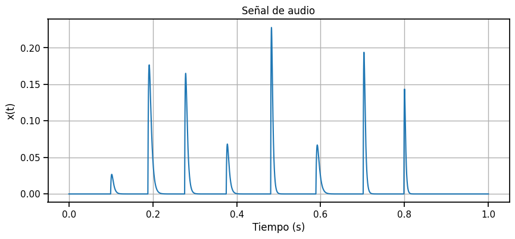
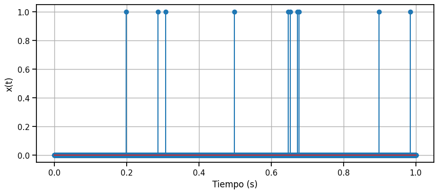

import numpy as np
import matplotlib.pyplot as plt
import seaborn as sns
sns.set_context('notebook')
from IPython.display import display, Audio
Ejercicios#
Ejercicios señales (1):#
Ejercicio 1.1 (*)#
Construir una dientes de sierra a partir de integrar un tren de pulsos. Considerar como transformar el tren de pulsos con operaciones básicas previamente a integrar.
Ejercicio 1.2 (*)#
Utilizando solo operaciones vectorizadas de numpy (no fors), calcular cuantos pulsos hay en la siguiente señal
sr = 16000
dur = 1
t = np.arange(0, int(dur*sr))/sr
x = np.zeros(len(t))
ts = np.arange(0, 800)/sr
ix = 0
n_pulsos = 8
for i in range(n_pulsos):
ix += int(np.random.uniform(0.7,0.95)*(len(t))/n_pulsos)
ix = min(ix, len(t)-len(ts))
s = np.random.uniform(200, 500)
A = np.random.uniform(0.1, 1)
xs = A*np.exp(-ts*s)*(1-np.exp(-ts*s))
x[ix:ix+len(ts)] = xs
plt.figure(figsize=(10, 4))
plt.plot(t, x)
plt.xlabel('Tiempo (s)')
plt.ylabel('x(t)');
plt.grid(True)
plt.title('Señal de audio');
plt.show()
Audio(x, rate=sr)

Ejercicio 1.3 (*)#
Dada una señal que tiene una series de impulsos en distintos instantes, calcular los tiempos entre impulsos a partir de operaciones vectorizadas (no fors)
x = np.zeros(int(dur*sr))
ps = sorted(np.random.randint(0, int(dur*sr), 10))
print("Tiempos entre pulsos:")
print(np.diff(ps)/sr)
x[ps] = 1
plt.figure(figsize=(10, 4))
plt.stem(t, x, 'o')
plt.xlabel('Tiempo (s)')
plt.ylabel('x(t)');
plt.grid(True)
plt.show()
Tiempos entre pulsos:
[0.088 0.020375 0.1900625 0.148875 0.0059375 0.019625 0.005125
0.2215 0.0861875]

Ejercicio 1.4 (**)#
Considerando señales continuas y la definición de valor medio como la integral
Calcular el valor medio de una señal cuadrada de frecuencia f y amplitud A en un sólo período.
Calcular el valor medio de una función escalón de amplitud A.
Luego hacerlo con la definición de valor medio como primer momento de la densidad de la señal.
Ejercicio 1.5 (***)#
Calcular analiticamente la PDF de una señal senoidal. Comparar con un histograma hecho a partir de los valores de la señal. Más información en el capítulo 16, Signal, Sound de Sensation. W. Hartmann.
A partir de un período de la señal
Considerar que la densidad en función de \(x\) depende de cuanto tiempo pase la señal en ese valor. Como el tiempo total es \(2\pi\), dividimos por \(2\pi\) para normalizar.
Integral de la densidad de probabilidad
Derivar \(t = \sin^{-1}(x)\) en función de \(x\)
Ejercicio 1.6 (***)#
En base al resultado anterior, calcular la potencia de la señal senoidal utilizando la expresión de la varianza con media cero.
Ejercicio 1.7 (**)#
Dado un dataframe con una lista de eventos con tiempos de inicio y fin. Realizando solo operaciones vectorizadas (no fors), agrupar eventos consecutivos con intervalos de tiempo menores que un umbral \(th_ipu\), asignándoles una etiqueta creciente \(n=0,1,2,...\).
Ejercicios Convolución y Respuesta de Sistemas(2):#
Ejercicio 2.1 (**)#
Demostrar las propiedades de conmutación, asocialidad y distribución de la convolución.
Ejercicio 2.2 (**)#
Tomar el ejemplo de síntesis granular con convolución y utilizar una señal de entrada que logre un efecto de modulación en la frecuencia fundamental de la señal de salida. Para hacer esto utilizar un paso variable entre impulsos que tenga una modulación lenta. Por ejemplo ir de \(f0=330\) a \(f0=660\). También reemplazar el impulso de una sola muestra por un pequño pulso gaussiano de ancho controlable para lograr una transición más suave.
Ejercicio 2.3 (*)#
Expresar la convolución discreta como operaciones de álgebra lineal construyendo una matriz de Toeplitz con una señal y multiplicando por un vector con otra señal.
Ejercicio 2.4 (**)#
Calcular como responden los siguientes sistemas a entradas exponenciales complejas \(x(t) = e^{j\omega t}\). Expresar la salida como un producto por la función de transferencia compleja \(y(t) = H(j\omega)e^{j\omega t}\)
Filtros pasa bajos
Filtros pasa altos
Ejercicio 2.5 (*)#
Escribir código explicito (for en python, si es lento no importa) para calcular la respuésta del siguiente sistema:
Probar con coeficiente aleatorios centrados en 0 y señales aleatorioas cortas.
Ejercicios Series de Fourier (3):#
Ejercicio 3.1 (**)#
Sintetiador de audio aditivo limitado en frecuencia. A partir de una nota fundamental \(f0\) y una frecuencia de muestreo \(sr = 48000\), plantear un sistema que descomponga en Fourier señales discretas arbitrarias de largo \(N=sr/f0\) muestras. Obtener los coeficientes de Fourier proyectando en la base y realizar la síntesis en base a coeficientes de fourier \(c_n\) hasta \(nf0<sr/2\) o lo mismo \(n<N/2\).
Sonificar el resultado generando varios ciclos hasta 1 segundo. Analizar con auriculares la calidad del audio comparando con la escucha de la señal original. Probar con una onda dientes se sierra.
Ejercicio 3.2 (***)#
Comparación de 2 métodos para obtener la suma de Fourier hasta la componente \(n<N/2\). Primero en base a la proyección de la señal en la base de Fourier y luego en base a la convolución rápida (fftconvolve) de la señal con el kernel de Dirichlet de grado \(n\). $\( {\displaystyle D_{n}(x)=\sum _{k=-n}^{n}e^{ikx}=\left(1+2\sum _{k=1}^{n}\cos(kx)\right)={\frac {\sin \left(\left(n+1/2\right)x\right)}{\sin(x/2)}},} \)$
Comparar la velocidad de ambos métodos y la calidad de la señal obtenida, en términos del error a la señal de entrada.
Ejercicio 3.3 (***)#
Crear un sintetizador que tome como entrada un grafo al cual se le calcula la matriz Laplacia, luego sus autovectores y autovalores. Proyectar una condición inicial (por ejemplo una delta) sobre la matriz de autovectores y sintetizar las oscilaciones usando la raiz de los autovectores como frecuencias. Probar con un grafo tipo grilla 2D. Visualizar tipo heatmap 2D los autovectoes.
Ejercicio 3.4 (***)#
Hacer un punteo de los distintos tipos de convergencia que se plantean para el desarrollo en series de Fourier. Demostrar al menos uno.
Ejercicios Transformada de Fourier (4):#
Ejercicio 4.1 (**)#
Demostrar el teorema de la convolución.
Ejercicio 4.2 (**)#
Analizar un audio corto a elección con la FFT. Diseñar una máscara para filtrar frecuencias en base al valor de la magnitud, ej anular todas las frecuencias menores a un umbral. Luego aplicar la FFT inversa y comparar con el audio original. Analizar para varios umbrales los cambios en la señal y reportar estos cambios cualitativamente, por ejemplo distinguir cuando se pierde la inteligibilidad de la señal.
Ejercicio 4.3 (**)#
Analizar un audio corto a elección con la FFT. Modificar la fase de una frecuencia particular, por ejemplo sumarle un desplazamiento a la fase de la frecuencia más cercana a 3000 Hz. Luego aplicar la FFT inversa y comparar con el audio original. Analizar para varios cambios de fase los cambios en la señal y reportar estos cambios cualitativamente. Hacerlo con un número creciente de frecuencias hasta destruir la coherencia temporal del audio.
Ejercicio 4.4 (***)#
Calcular la relación entre el desvío estandar de ruido blanco gaussiano y la densidad espectral de potencia. Obtener una fórmula para el nivel en decibeles de la densidad espectral de potencia en función del desvío estandar. Comprobar numericamente.
Ejercicios Transformada de Fourier de Tiempo Corto (5):#
Ejercicio 5.1 (**)#
Ejercicios Filtros (6):#
Ejercicio 6.1 (**)#
Expresar la respuesta en frecuencia de un filtro analógico pasa bajos de primer orden con frecuencia de corte \(\omega_c\) en terminos de \(s\). Usando la transformada bilineal obtener una versión discreta del filtro. Transformada bilineal:
Expresar el filtro en términos de coeficientes \([b_0, b_1]\) y \([a_0, a_1]\). Comparar con la respuesta en frecuencia de un filtro IIR de primer orden \(b = [\alpha]\) y \(a = [1, \alpha-1]\) donde \(\alpha = \frac{1}{\omega_c}\). Comparar numéricamente con la respuesta en frecuencia de ambos filtros para distintos valores de \(\omega_c\).
Ejercicio 6.2 (***)#
Continuar el ejercicio anterior pero realizar una comparación analítica de la respuesta en frecuencia para ambos tipos de filtros digitales.